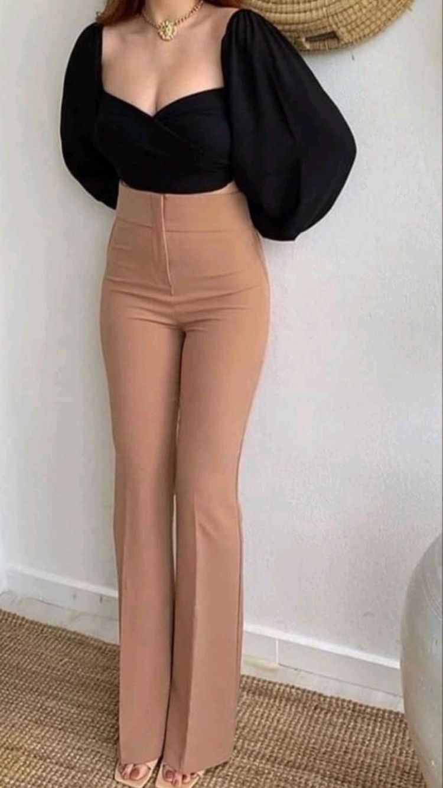

PRODUCT

casual pants
Php.199.00
FASHION CASCUAL ATTIRE is a Western dress code that is relaxed, occasional, spontaneous and suited for everyday use.
 Sexsy dress
Php.150.00
Sexsy dress is a sexy dress would be one that emphasizes the sex appeal of the person wearing it.it helps you makes you more comportable.Dressing sexy is more then simply wearing "sexy clothes"
Conventionally, that means showing off the legs.
Sexsy dress
Php.150.00
Sexsy dress is a sexy dress would be one that emphasizes the sex appeal of the person wearing it.it helps you makes you more comportable.Dressing sexy is more then simply wearing "sexy clothes"
Conventionally, that means showing off the legs.
beach dress
Php. 189.00
Beach dress is makes you feel physically relaxed when you use it, this kind of outfit helps the other women boost thier confidence in beach and it is also feel more like comfy.
back